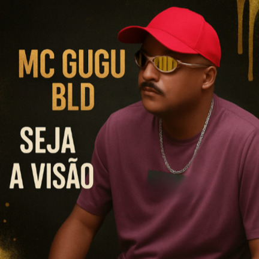

FUNK NA LAJE
Sem dublê e sem maquiagem
Sem dublê e sem maquiagem
Funk raiz da Baixada Santista

MC Gugu BLD é um artista do movimento funk da Baixada Santista com trajetória iniciada nos anos 90.
Atuando como MC desde 1996, conquistou destaque regional nas rádios comunitárias da Baixada Santista, participando da cena do funk em um período importante para a consolidação do movimento na região.
No final dos anos 90 e início dos anos 2000, MC Gugu BLD teve composições gravadas em CDs e coletâneas de funk por outros artistas do gênero.
Suas músicas circularam em projetos independentes e coletâneas que ajudaram a fortalecer a cena do funk regional.
Em meados dos anos 2000 formou uma dupla com MC Alex.
Durante esse período gravaram quatro músicas que foram divulgadas em sites populares da época como Top Funk, Funk MP3 e outras plataformas importantes da cultura funk na internet.
Atualmente MC Gugu BLD segue em carreira solo como artista independente, trabalhando em novas músicas e projetos voltados ao fortalecimento da cultura funk.
Entre suas iniciativas está o projeto Funk na Laje, voltado à valorização dos artistas do movimento através de apresentações e entrevistas em formato de Pocket Show.